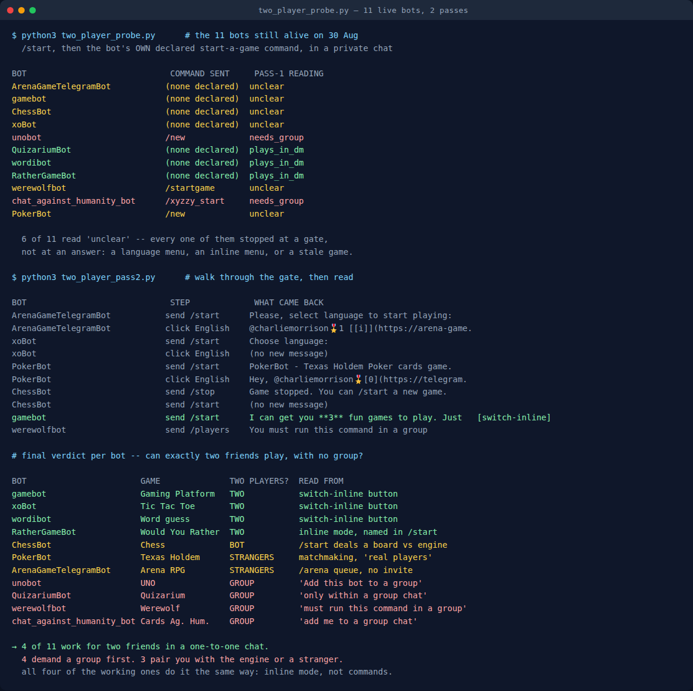

Telegram Games for 2 Players: 4 of 11 Bots Work in a DM
Every “best Telegram games” list answers the same question: is this game any good. None of them answer the question two people actually have, which is whether the thing will work for two people — in the chat they are already in, without stopping to create a group, name it, and add a bot to it.
That gap is not cosmetic. I have now tested these bots twice, and the failure mode for a pair of friends is not a bad game, it is a lobby that says waiting for players and never fills. So on 1 September 2026 I ran a third pass over the eleven bots that were still alive when I retested them on 30 August, asking one thing of each: can exactly two people play you, right here, with no group?
Four can. Four refuse without a group. Three will happily play, but not with the person you wanted to play with.
How I tested it
Guessing commands would have measured my guesses, so the probe reads each bot’s own declared command list — the menu Telegram shows when you type / in a chat, which the bot registers with Telegram itself — and picks the start-a-game command out of that. UNO declares /new, Werewolf declares /startgame, Chat Against Humanity declares /xyzzy_start. Nothing was invented; if a bot declared no such command, the probe recorded that instead of inventing one.
The other rule carried over from the August run: only messages newer than the ID already sitting in the chat count as a reply. Without that, an old greeting left over from a previous visit makes a switched-off bot look like it answered. Two of these chats would have produced exactly that false positive.

The first pass answered six of eleven with “I don’t know”
Five bots gave a clean answer immediately. Six came back unclear — and that word is a fact about my probe, not about the bots. Every one of the six had stopped at a gate rather than at an answer: Arena Game, xoBot and PokerBot open with a language selector, GameBot opens with a button menu and no prose, and ChessBot answered “You have an active game. You can /stop it” — leftover state from a visit weeks earlier.
A gate is not a result. So the second pass clicks through it the way a person would: press the English button, clear the stale game, then read what is behind it. That is where the actual answers were.
Two things my own script got wrong, and how I caught them
Before the table, the corrections — because they are the reason I trust the rest of it.
Quizarium was classified as playable in a DM. It is the opposite. Its reply reads: “you can use it only within a group chat… If you want to play alone, you still should create a group chat with me and you in it.” My classifier saw the phrase play alone, matched its solo pattern, and ranked it above the group pattern that fired on the same sentence. A mandatory group beats a solo affordance every time; ranking them the other way turned the strictest bot in the set into the friendliest one.
Werewolf was classified as unclear. It gave the clearest answer of all eleven: “You must run this command in a group.” Seven words, unambiguous, and my patterns did not include that phrasing, so the one bot that said exactly what I was asking got filed as a mystery.
Both were caught by reading the raw replies next to the verdicts instead of accepting the verdict column, and both are now fixed — verified by re-running the corrected rules over the same captured text, which moved precisely those two bots and nothing else. If a summary and the underlying evidence disagree, the summary is the thing that is wrong.
All eleven, and what each one does to a pair of friends
| Bot | Game | Two friends, no group? | What it actually said or did |
|---|---|---|---|
| @gamebot | Telegram Gaming Platform | Yes | Menu is a single Play with friends switch-inline button |
| @xoBot | Tic tac toe | Yes | Play with friend switch-inline button, behind an edited message |
| @wordibot | Word guessing | Yes | “You can play it in private chat with your friends” + switch-inline button |
| @RatherGameBot | Would You Rather | Yes | Names inline mode in /start: type the @username “to play against a friend” |
| @ChessBot | Chess | Vs the engine | /start deals a board immediately; only /start and /stop exist |
| @PokerBot | Texas Hold’em | Strangers | “play… with real players” — matchmaking, not an invite |
| @ArenaGameTelegramBot | Arena RPG | Strangers | Solo grind plus an /arena queue against whoever is in it |
| @unobot | UNO | Group | “1. Add this bot to a group… after at least two players have joined” |
| @QuizariumBot | Quizarium | Group | “only within a group chat” — and a group even to play alone |
| @werewolfbot | Werewolf | Group | “You must run this command in a group” |
| @chat_against_humanity_bot | Cards Against Humanity | Group | “add me to a group chat, and type /xyzzy_start” |
The middle three deserve their own row rather than a yes or a no, because a list that calls PokerBot a two-player game is technically right and practically useless. You can play poker on it tonight. You cannot play poker on it with your friend, because there is no invite — you are dropped into a table of strangers. Chess is the same shape in the other direction: a perfectly good game against the engine, no way to hand the other side of the board to a person.
The four that work all work the same way, and it is not commands
This is the finding I did not expect. Every one of the four is playable by two people through inline mode — Telegram’s mechanism for summoning a bot into a conversation without that bot being a member of it. In the raw data it shows up as a button of type KeyboardButtonSwitchInline, which is the API’s way of saying “put my @username in the user’s chat box and let them pick”. Three of the four expose it as a literal button labelled some variation of Play with a friend; RatherGameBot describes it in words instead.
Not one of the four needs you to add anything to anything. And not one of the group-only four has that button at all — they are lobby moderators, built to post into a room and track whose turn it is, which requires a room. That is a design decision from an earlier era of Telegram, and it is why inline mode exists: bots that work inside a conversation instead of joining it. Telegram introduced it back in 2016, and the surviving game bots split almost perfectly along the line of who adopted it.
How to actually use it, in three steps
- Open the chat with the person you want to play. Not a group — the normal one-to-one chat you already have.
- Type the bot’s username followed by a space:
@xoBot. A popup appears above the keyboard. - Pick the game from the popup. It posts into your conversation, and both of you tap the board in the message.
If nothing pops up, that bot has no inline mode and no amount of retrying will produce one — check the table above rather than assuming you mistyped. The one genuine annoyance is that inline results are cached, so a bot you tried a minute ago sometimes shows a stale menu; retyping the username usually clears it.
Want more than four games for the two of you?
The honest answer above is that the bot ecosystem is thin for pairs — four working options, and two of them are tic tac toe and word guessing. The Telegram Party Pack is the no-bot route: 255 prompts across six games as copy-paste blocks, plus the poll, spoiler-tag and threading mechanics that make a round work in a chat where nobody is in the same room. It scales down to two people and up to a full group, and nothing in it can be switched off by someone else’s server. PDF included.
Get the pack — $9.99 Every bot above stays free — they are not mine to sell. See what’s in the pack before you buy.The two workarounds worth knowing
A group of two is a legal group. If you specifically want UNO or Cards Against Humanity with one other person, nothing stops you creating a group containing exactly the two of you and the bot. UNO explicitly says it starts “after at least two players have joined”, so two is enough for it. Werewolf is the exception — a social-deduction game needs a crowd to deduce against, and no amount of group-creating fixes a two-person Werewolf night.
Telegram’s own games need no bot at all. Send the dice, darts, basketball, football, bowling or slot-machine emoji into any chat, including a one-to-one, and Telegram animates a real random result. I threw each of them 900 times to check they were not weighted; every one is statistically indistinguishable from a fair draw. For two people that is the lowest-friction game on the platform: first to three bullseyes, highest roll picks the film, best of five at bowling. Nothing to add, nothing to configure, nothing that can be switched off next spring.
What this means for the lists
Three passes over these bots have now produced three different findings, and they stack into one point. In July, seven of eighteen recommended bots were already dead. In August the score held at eleven alive but the names underneath it moved, and none of the eleven had a Mini App. Tonight: of those eleven survivors, fewer than half work for the most common social configuration there is — two people.
None of that is visible from a listicle, because a listicle records that a game exists and is fun. It does not record whether the server is still on, whether the bot has followed the platform for the last five years, or whether the game needs more people than you have. Those are the three things that decide whether your evening works, and all three take under a minute each to check yourself.
So the durable advice is the same as last time, with one addition. Send /start and wait fifteen seconds — that catches the dead ones. Then type the bot’s @username into your chat box — if a popup appears, the two of you can play right here; if it does not, budget for a group. Both checks together cost less time than reading the article that recommended the bot.
GameBot, the first of those four, is the front door to Telegram’s own Gaming Platform, and I later played all three of its games end to end: they still work, and almost nothing else on Telegram still uses the platform they run on.
More on running one of these with actual humans: how to run a Telegram game night, and the party games worth playing in 2026.
← All posts